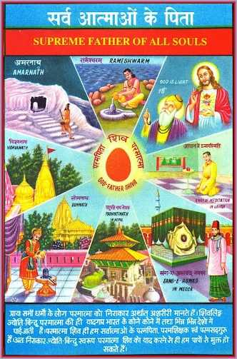
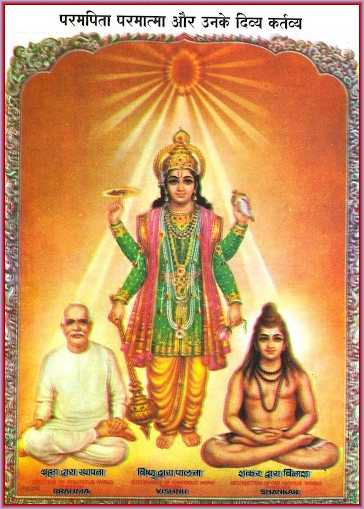
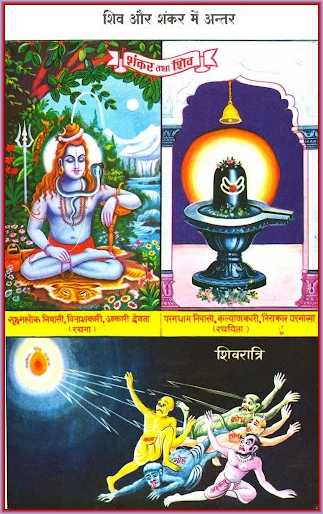
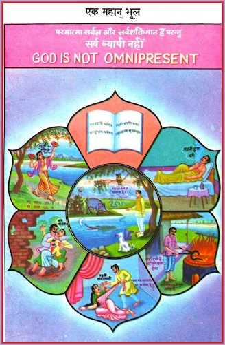
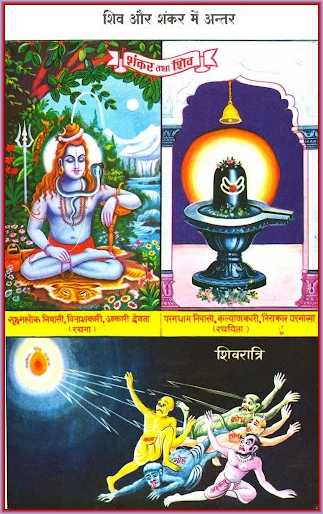
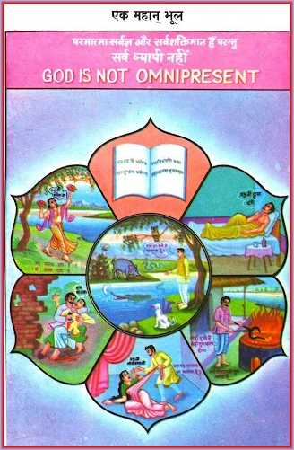

God's Deeds and the World-Wheel
  



On the third day, the course explores the divine deeds of God, the Supreme Soul, and the concept of the World-Wheel. The lesson begins by explaining that God is the Creator, Sustainer, and Destroyer of the world.
God's deeds are described as acts of creation, sustenance, and destruction. Creation involves the establishment of the world and the manifestation of souls. Sustenance refers to the maintenance and preservation of the world and the souls within it. Destruction is the process of ending the world and liberating the souls from the cycle of birth and death.
The World-Wheel is introduced as a metaphor for the cycle of time, consisting of four ages: Satyug, Tretayug, Dwaparyug, and Kaliyug. Each age has its own characteristics, and the cycle repeats itself over and over. The current period is identified as the time of transition from Kaliyug to Satyug, a time of spiritual awakening and transformation.
The lesson emphasizes the importance of recognizing the current time as the confluence of the end of Kaliyug and the beginning of Satyug. It is during this period that the Supreme Soul descends into the world to establish the New World and guide souls towards righteousness. The World-Wheel serves as a reminder of the cyclical nature of time and the need for spiritual preparedness.